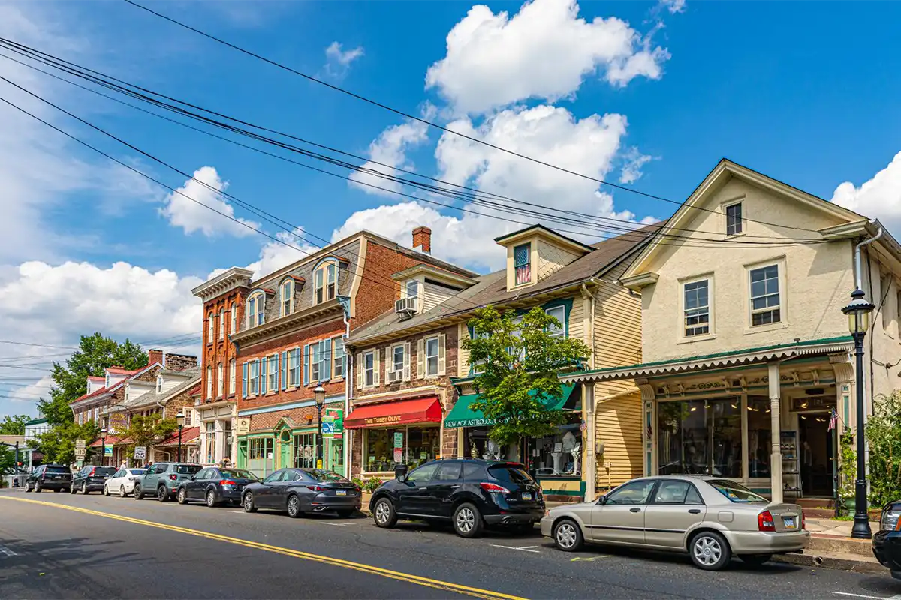
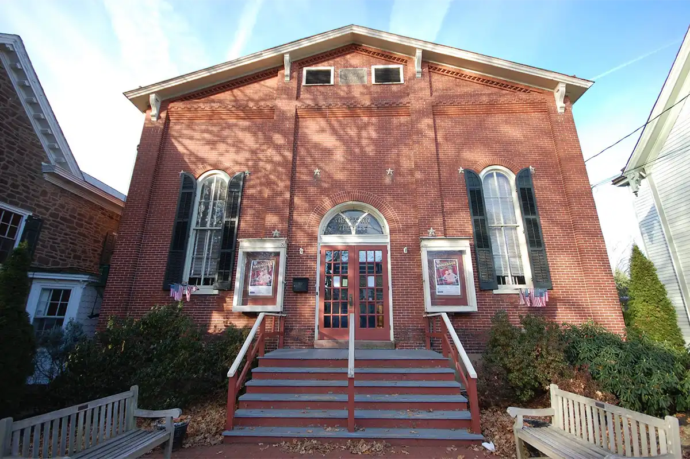
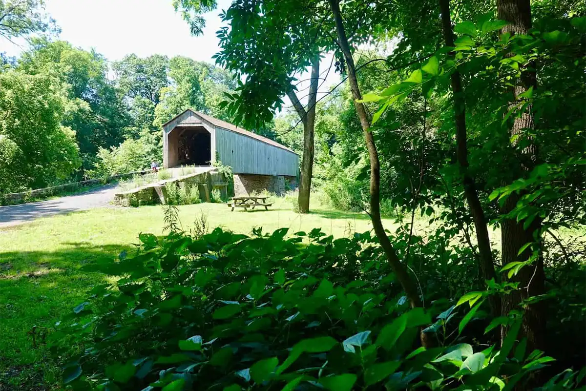
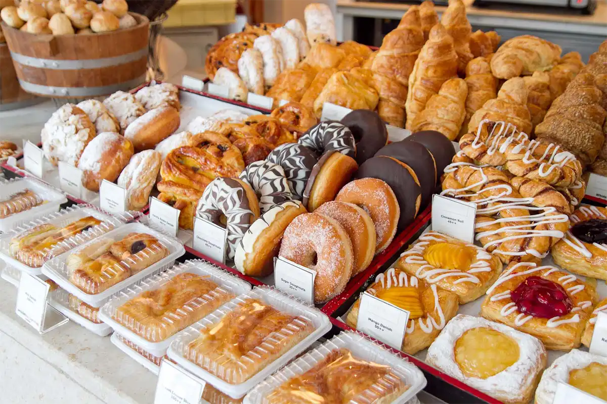
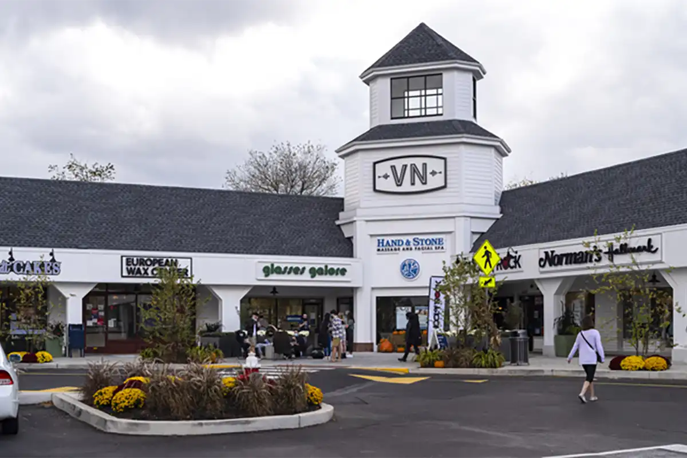
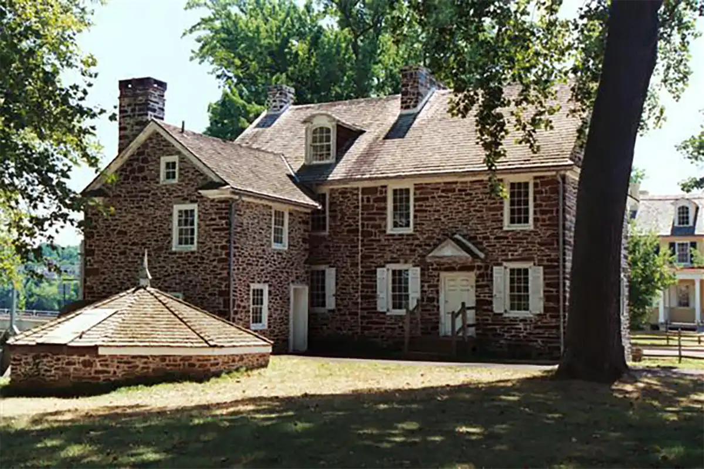

State Street in Newtown. Photo via visitbuckscounty.com

The Newtown Theatre. Photo by The Newtown Theatre via Facebook

Schofield Covered Bridge in Tyler State Park. Photo by Lolly via travelwithlolly.com

Homemade pastries for sale at the Newtown Farmers Market. Photo via newtownfarmersmarket.com

Shops at the Village shopping center. Photo via brixmor.com

Washington's Crossing Historic Park. Photo via visitbuckscounty.com